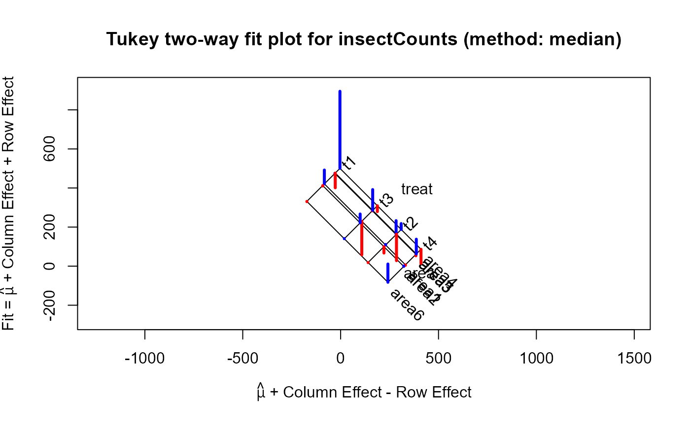
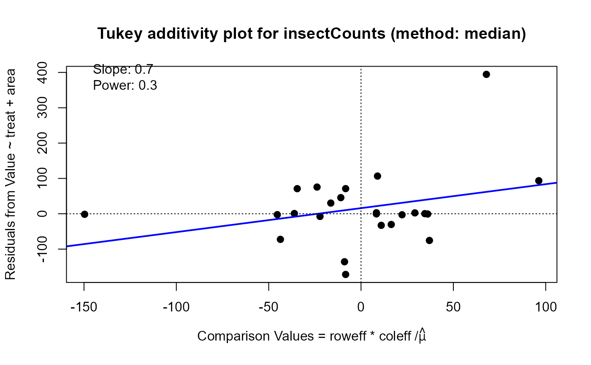
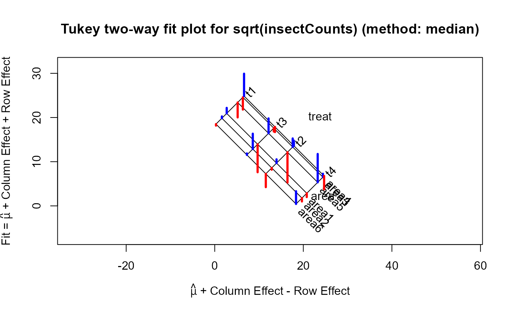
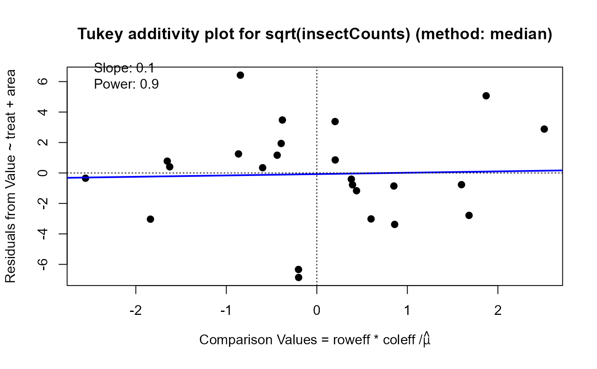

Counts of an insect for the combinations of 4 treatments and 6 areas of a field
Source:R/data.R
insectCounts.RdCounts of numbers of an insect, Leptinotarsa decemlineata (the Colorado potato beetle), each of which is the sum for two plots treated alike, for all combinations of 4 treatments and 6 areas of the field chosen to be relatively homogeneous.
Details
These data are used in Tukey (1977) Exhibit 1 of Ch 11 and throughout the chapter as examples of median polish. Because the data are counts, either a sqrt or log transformation would be reasonable.
References
Tukey, J. W. (1977). Exploratory Data Analysis, Reading MA: Addison-Wesley. Exhibit 1 of chapter 111
Examples
insect.2way <- twoway(insectCounts, method="median")
print(insect.2way, digits=2)
#>
#> Median polish decomposition (Dataset: "insectCounts"; Response: Value)
#> Residuals bordered by row effects, column effects, and overall
#>
#> area
#> treat area1 area2 area3 area4 area5 area6 roweff
#> + ------- ------- ------- ------- ------- ------- + -------
#> t1 | 71.07 -2.54 0.39 394.50 -75.54 -1.50 : 252.00
#> t2 | 2.86 -32.75 71.18 30.29 -135.75 -0.71 : -60.79
#> t3 | -171.71 45.68 -0.39 -30.29 106.68 0.71 : 60.79
#> t4 | -2.86 2.54 -7.54 -72.43 75.54 93.57 : -162.07
#> + ....... ....... ....... ....... ....... ....... + .......
#> coleff | -26.84 -35.23 26.84 52.73 28.77 -116.27 : 195.77
#>
plot(insect.2way)

plot(insect.2way, which="diagnose")

#> Slope of Residual on comparison value: 0.7
#> Suggested power transformation: 0.3
#> Ladder of powers transformation: cube root
# try sqrt transformation
insect.sqrt <- twoway(sqrt(insectCounts), method="median")
print(insect.sqrt, digits=2)
#>
#> Median polish decomposition (Dataset: "sqrt(insectCounts)"; Response: Value)
#> Residuals bordered by row effects, column effects, and overall
#>
#> area
#> treat area1 area2 area3 area4 area5 area6 roweff
#> + ----- ----- ----- ----- ----- ----- + -----
#> t1 | 1.25 0.41 -2.78 5.07 -3.38 -0.34 : 9.12
#> t2 | 0.86 -0.41 1.94 1.17 -6.86 -3.02 : -2.14
#> t3 | -6.34 3.48 -0.78 -1.17 3.38 0.34 : 2.14
#> t4 | -0.86 -0.77 0.78 -3.03 6.42 2.88 : -8.96
#> + ..... ..... ..... ..... ..... ..... + .....
#> coleff | -1.24 -2.33 2.41 2.68 1.23 -3.66 : 13.06
#>
plot(insect.sqrt)

plot(insect.sqrt, which="diagnose")

#> Slope of Residual on comparison value: 0.1
#> Suggested power transformation: 0.9
#> Ladder of powers transformation: no transformation